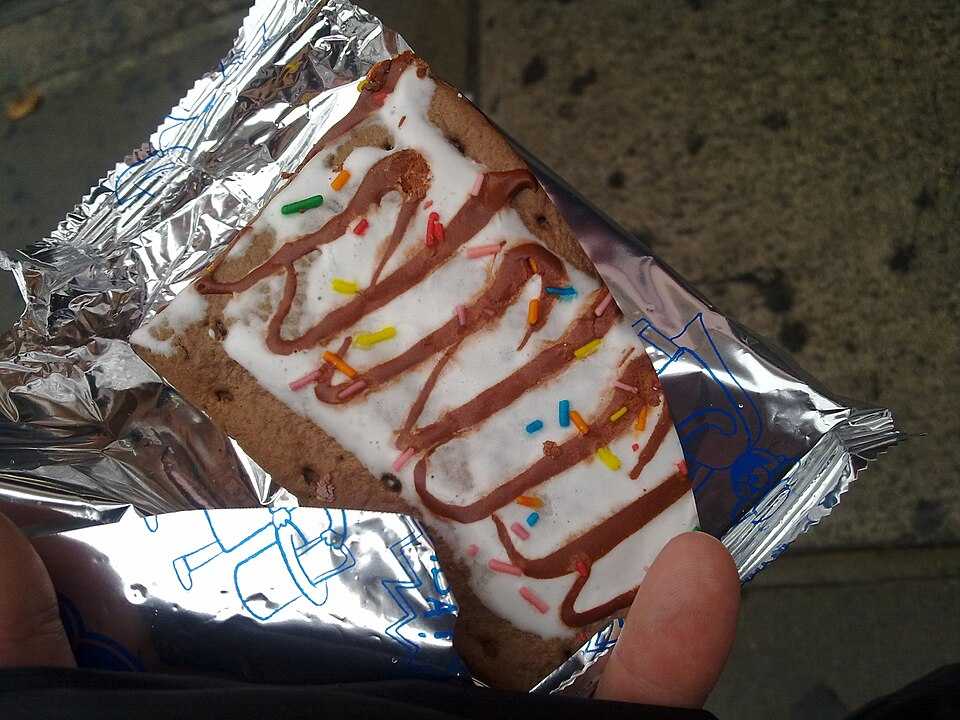

Doces
Tortinhas de banana

Ingredientes
- Recheio: 3 bananas-nanicas médias, 1 colher (sopa) de suco de limão, 1 lata de Leite Moça com Chocolate, 1 colher (chá) de canela, 2 gemas, 1 colher (sopa) rasa de manteiga
- Massa: ¾ xícara (chá) de açúcar, 1 pitada de sal, 1 ovo, 2 xícaras (chá) de farinha de trigo, 5 colheres (sopa) de manteiga (150 g)
Modo de preparo
- Recheio: amasse as bananas com o limão; junte ½ lata do Leite Moça e a canela; cozinhe ~15 minutos. Misture o restante do Leite Moça com as gemas e a manteiga, junte ao creme e engrosse.
- Massa: misture açúcar, sal e ovo; acrescente a farinha e por último a manteiga até soltar das mãos. Reserve um pedaço para decorar.
- Abra a massa, forre forminhas, recheie e faça xadrez com tirinhas. Asse a 180 °C até dourar. Espere esfriar bem para desenformar.